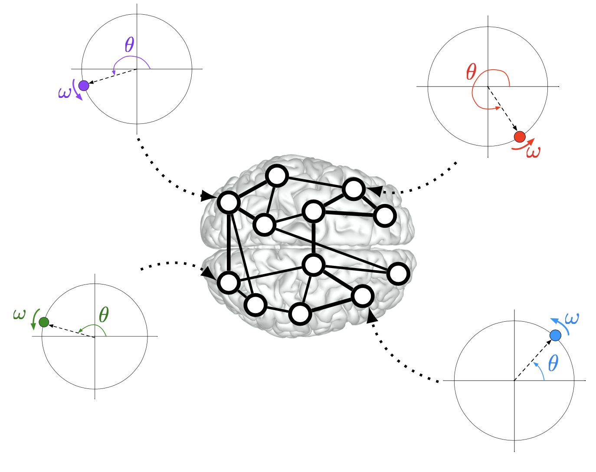

|
 |
Synchronous neural activity enables a multitude of functions in the brain. Examples include motor coordination, sleep spindles, circadian rhythms, and large scale integration of sensori stimuli. Furthermore, synchronization can be used as a biomarker in multiple neurological disorders, and abnormal or decreased synchronized activity has been linked to neurological damage or cognitive decline due to aging. Yet, a complete characterization of synchronization phenomena in the brain is far from complete. By studying the brain as a complex dynamical system of interconnected neural populations, we have contributed towards the theoretical understanding of the synchronization of interconnected brain regions. Specifically, by abstracting oscillatory neural populations as nonlinear oscillators, we have revealed the mechanisms that enable a variety of synchronization phenomena in groups of oscillators.
For more details see, for instance, our works Stability Conditions for Cluster Synchronization in Networks of Heterogeneous Kuramoto Oscillators, A Framework to Control Functional Connectivity in the Human Brain, Exact and Approximate Stability Conditions for Cluster Synchronization of Kuramoto Oscillators, or the following 3-minute presentation:
|